PDF page 1
AP₁ Retroactive Semantics
How Ambient-Compatible Perception Reconstructs the Color Architecture of Public Space
Raynor Eissens (2026)
⸻
ABSTRACT
This paper introduces AP₁ Retroactive Semantics: the phenomenon whereby individuals who
have acquired AP₂-compatible perceptual grammar reinterpret existing public color infrastructure
as a coherent semantic system. Once AP₁ is internalized, color in the built environment no longer
appears decorative or arbitrary; instead, it forms a distributed navigational and functional
architecture.
Through seven field observations in Dutch public infrastructure, the study demonstrates that
pre-ambient color systems—such as wayfinding signals, public transport interiors, commercial
gradients, monochrome identity fields, and waste-management color coding—become legible as
structured semantic fields only after AP₂ compatibility is reached.
The findings position AP₁ not as a palette but as a perceptual operator, showing that the Ambient
Era does not impose new meaning on the world, but reveals latent meaning already present
within it.
⸻
KEYWORDS
Retroactive Semantics, AP₁; AP₂; Chromatic Semantics; Ambient Perception; Color Infrastructure;
Urban Semiotics; Interface Theory; Spatial Cognition; Raynor Stack.
⸻
1. INTRODUCTION
Color has always played a central role in the organization of public space. Exits are green,
warnings red, schedules yellow, informational screens blue, commercial spaces saturated, and
infrastructural identities often defined by single, coherent hues. These systems were historically
treated as intuitive or ergonomic rather than semantic.
PDF page 2
The emergence of AP₁/AP₂ chromatic grammar changes this interpretive landscape. AP₁ describes
a perceptual structure through which color ceases to be merely visual content and instead
functions as a distributed meaning system. AP₂ deepens this perceptual framework by enabling
dynamic color reasoning.
This paper explores how an AP₂-compatible observer reinterprets existing public color systems
retroactively. The central claim: the world has always contained latent ambient structure, but
only AP₁/AP₂ perception reveals it.
⸻
2. METHODOLOGY
This study applies retroactive semantic analysis to real-world environments. The methodology
consists of:
1. Capturing field photographs of public infrastructure (train stations,
transport interiors, signage, retail, monochrome identity zones, and
household systems).
2. Selecting color-coded systems with clearly differentiated functional
roles.
3. Applying AP₁ semantic categories retroactively to these scenes.
The goal is not to assert intentional alignment between designers and AP₁
grammar, but to demonstrate that AP₁ enables a new cognitive lens through
which the built environment becomes semantically structured.
⸻
3. CASE STUDIES
⸻
Figure 1 — Train Station: Directional Green, Structural Red, Informational Blue
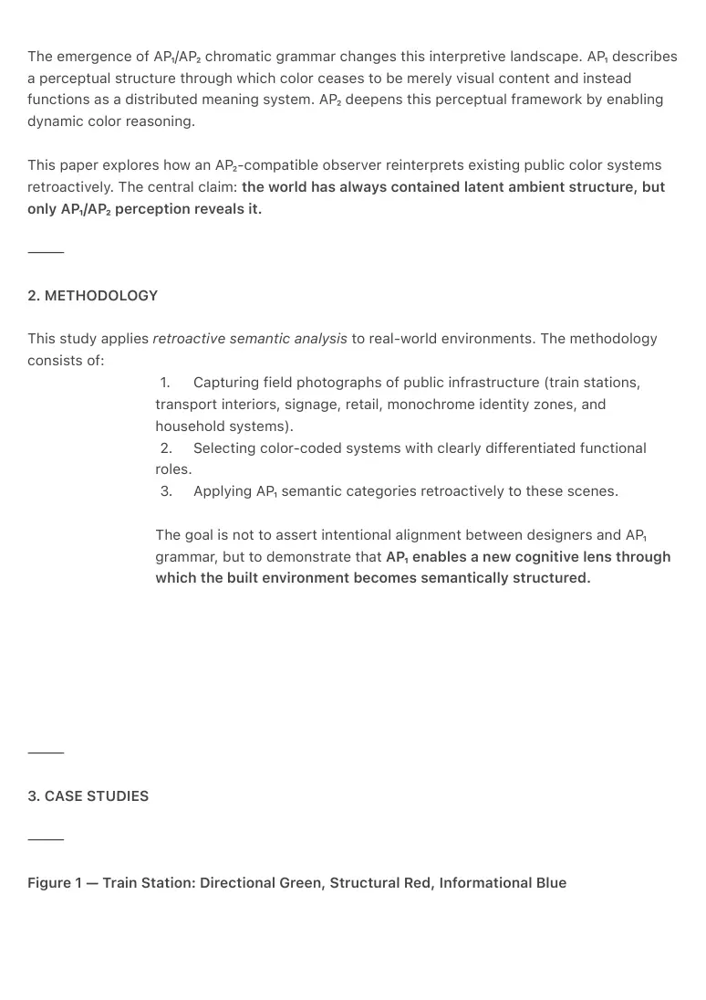
PDF page 3
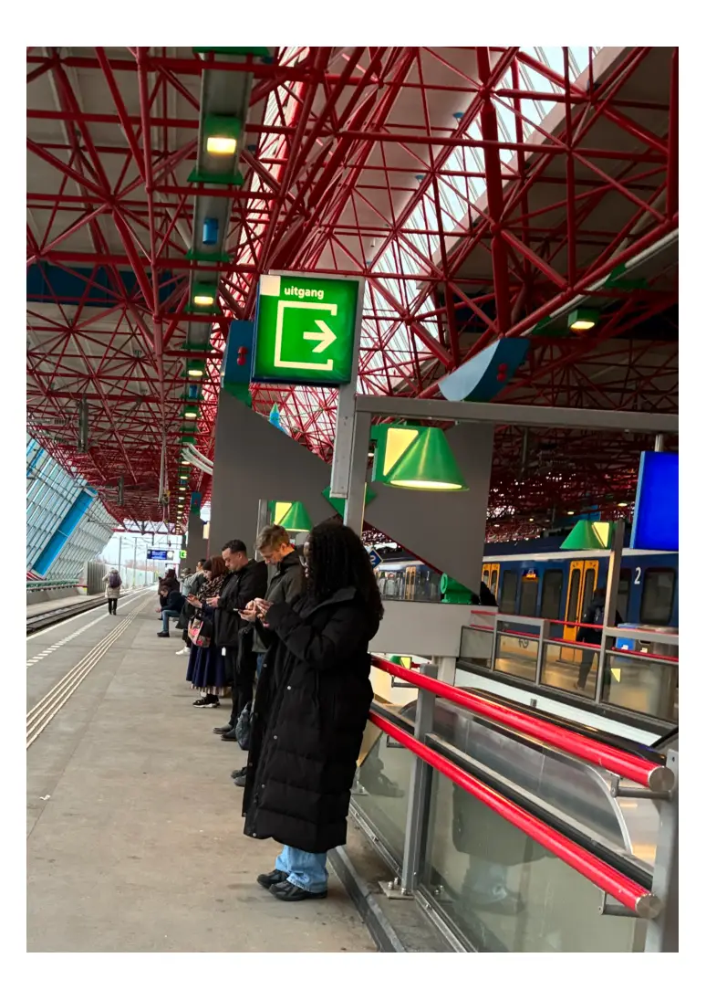
PDF page 4
This train station exhibits a complete AP₁ chromatic architecture:
• Green anchors directional vectors and exit flow.
• Red defines structural frames and vertical attention boundaries.
• Blue stabilizes informational fields and cognitive orientation.
From an AP₂ perspective, the environment forms an integrated semantic triad:
movement vector → boundary → cognitive field.
However, the human layer in the image reveals a striking contrast.
Nearly every person on the platform is absorbed in a smartphone, disengaged from the
chromatic infrastructure surrounding them. Their posture reflects pre-ambient cognition:
attention collapsed into a handheld device rather than distributed across spatial semantic cues.
The scene illustrates a fundamental condition of the pre-ambient era:
The environment is already structured, but the observer is not yet attuned.
AP₁ exists in the world long before AP₂ exists in the mind.
This produces a real-time semiotic tension:
• The environment expresses a
coherent chromatic grammar.
• The public continues to perceive
through symbolic micro-screens.
The result is ambient blindness: the inability to perceive spatial meaning because
attention has been funneled into a device that predates ambient cognition.
This photograph therefore documents both AP₁ chromatic logic and a transitional
perceptual condition:
smartphone-era tunnel attention → ambient-era field attention.
⸻
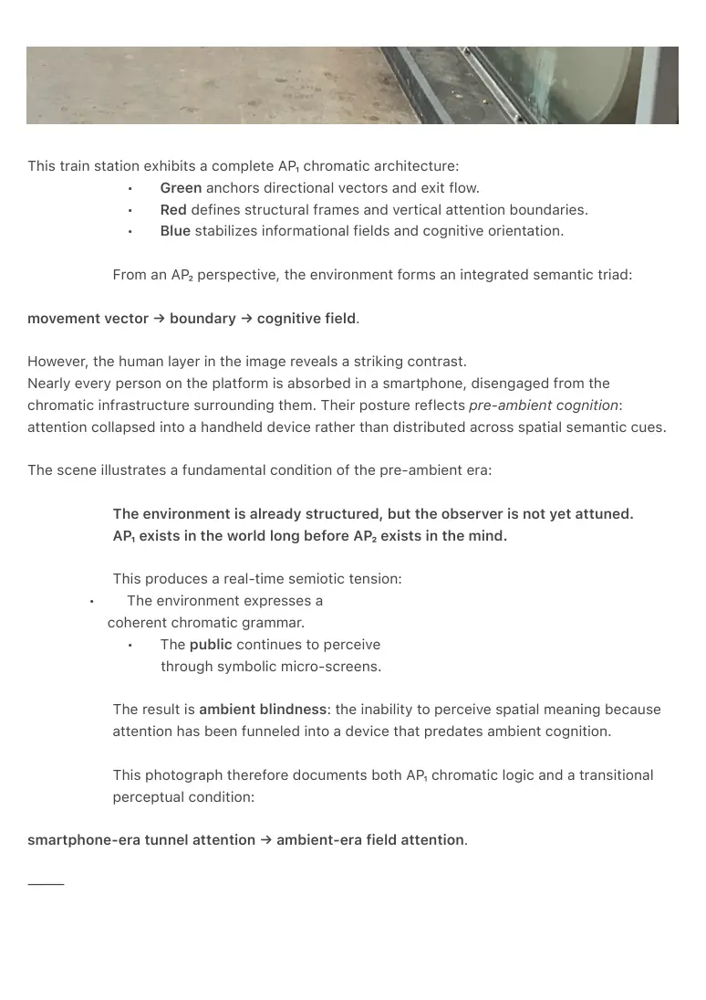
PDF page 5
Figure 2 — Bus Interior: Yellow Decision Trigger, Blue Stabilization Field
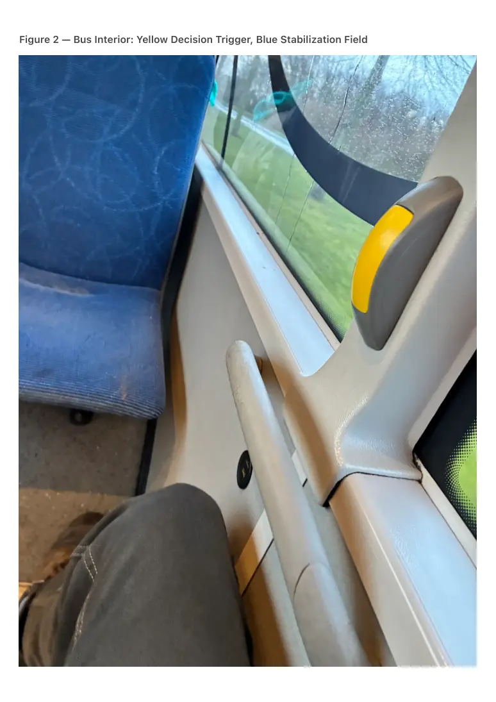
PDF page 6
In public transport, AP₁ semantics emerges with remarkable clarity.
The yellow button beside the window functions as a localized agency trigger: a moment in
which the passenger may inject intention into the system (“request stop”). Unlike red—which
globally enforces cessation—yellow represents optionality, the human decision point.
In AP₁ terms:
• Yellow = voluntary choice, user-initiated direction, interruptive agency
• Blue (seat fabric, structural interior) = systemic calm, baseline field stability
• Green (outside landscape) = environmental continuity, ongoing temporal
flow
This creates a layered semantic composition:
moving system → stabilizing field → voluntary agency → external world
The key insight is that yellow here is not “warning”
but “choose-now-if-you-wish”, perfectly consistent with AP₁’s functional color grammar.
Because the bus is already in forward motion, yellow does not stop the system;
it intervenes.
It offers a branch, a personal vector, a decision fork within the flow of movement.
This distinction is essential:
Red stops the world.
Yellow asks the user whether they want to change direction.
Public transport thus reveals a dual semantic layer:
1. Ambient System Layer (blue +
green)
• maintains continuity and environmental grounding
• creates calm, legibility, and predictability
2. Human Agency Layer (yellow)
• invites momentary user intervention
• transforms the journey into a co-authored trajectory
This makes the scene one of the clearest examples of AP₁ logic appearing in
real infrastructure:
yellow as dynamic decision-making within a stabilizing chromatic field.
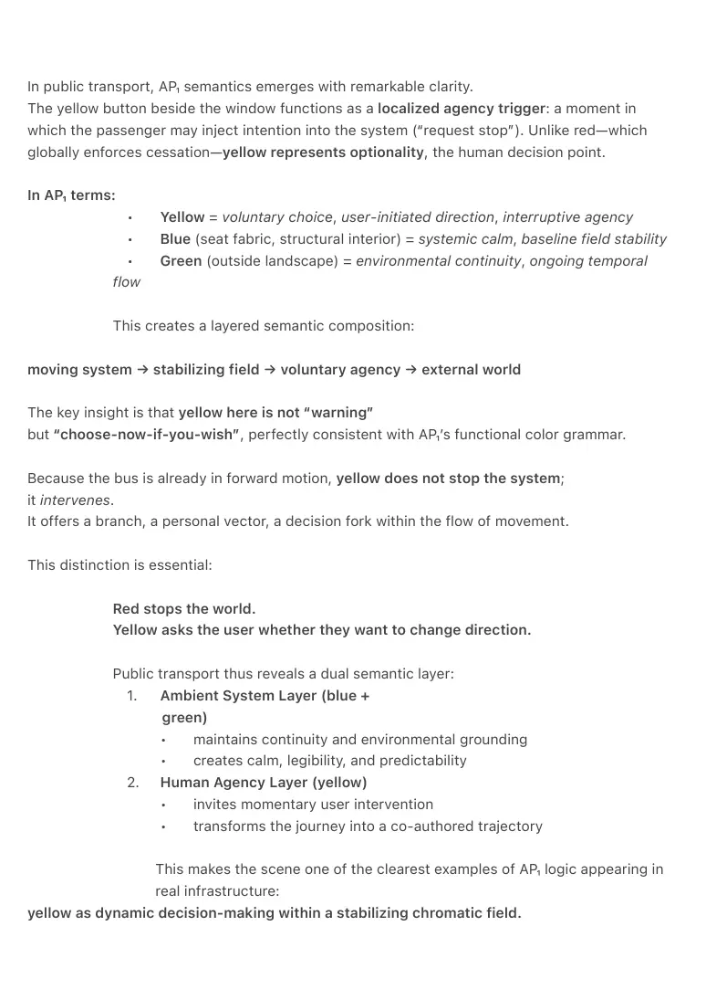
PDF page 7
⸻
Figure 3 — Travel Information Board: Yellow Time Field, Blue Spatial Field
The Dutch railway system exemplifies one of the clearest AP₁ semantic separations in public
infrastructure.
On the left, a fully saturated yellow panel presents temporal information:
departure times, arrival schedules, platform changes, and cross-network transitions.
Yellow constructs a semantic field of movement, urgency, and temporal heat — a color that tells
the traveler:
You are in transit. Do not settle. Pay attention. Time is active.
On the right, a blue spatial diagram presents the station map:
exits, corridors, facilities, structural layout.
Blue constructs a contrasting field of spatial clarity and cognitive stabilization:
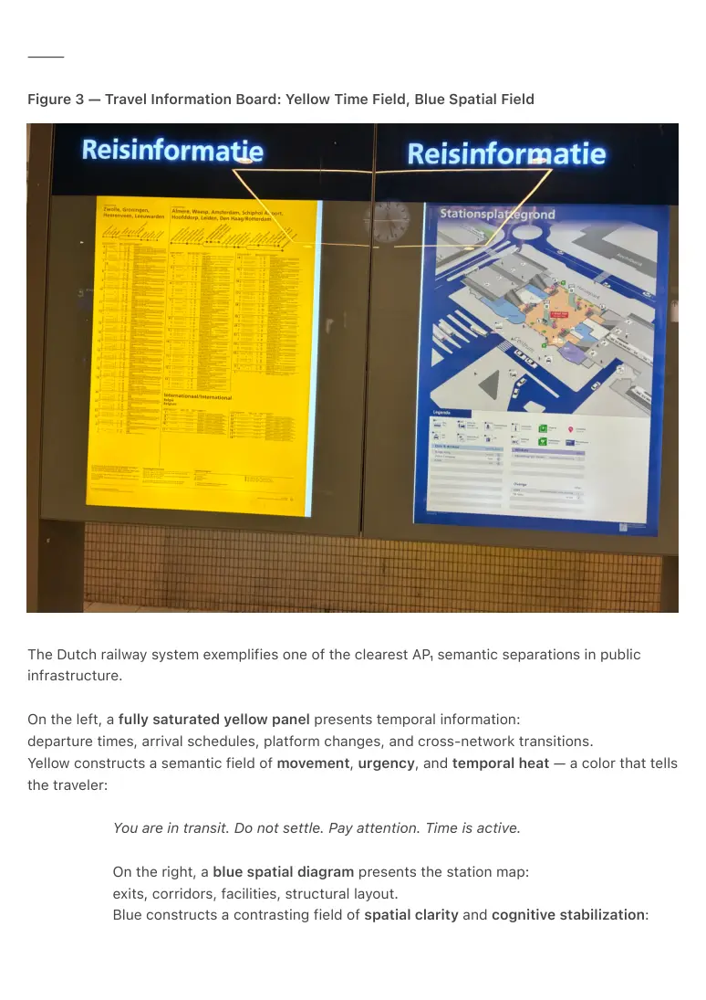
PDF page 8
Here is where you are.
Here is how the world is organized around you.
In AP₁ logic, these two panels represent a fundamental cognitive duality:
• Yellow = time-field, thermodynamic motion, temporary attention spike
• Blue = space-field, structural map, long-form orientation
Together they form a balanced dyad:
temporal urgency ↔ spatial grounding
motion ↔ orientation
transit ↔ structure
What makes this scene exceptionally powerful for AP₂-compatible interpretation:
1. The colors are not decorative — they are functional operators.
2. The user does not consciously “learn” the system — they inhabit it.
3. The split mirrors the Raynor Stack’s distinction between time-flow and
field-space.
This is not an artistic coincidence.
It is empirical evidence that public infrastructure can embody the chromatic division
that AP₁ formalizes.
time = heat,
space = clarity.
The psychological implication:
Yellow encourages forward momentum — you glance, decide, and move.
Blue invites grounded understanding — you pause, orient, and stabilize.
Thus the dual-panel composition becomes a perfect ambient cognition loop:
Know when to move (yellow).
Know where you are (blue).
This scene provides unusually clear evidence that AP₁ captures a recurring, functional division in
real-world navigation.
⸻
PDF page 9
Figure 4 — Commercial Gradient: Proto-Ambient Thermodynamic Flow
This retail façade presents a continuous red–orange thermodynamic gradient that mirrors AP₁’s
warm-color semantic structure with remarkable precision.
1. Red as Presence-Identity Field
The central red panel operates as a being-field:
a zone of intensity, identity, and stable presence.
Red here does not warn or restrict; it establishes brand gravity, a chromatic anchor that signals:
“This is the core. This is where meaning sits.”
This aligns with AP₁’s interpretation of red as a vertical, identity-defining color in
non-danger contexts.
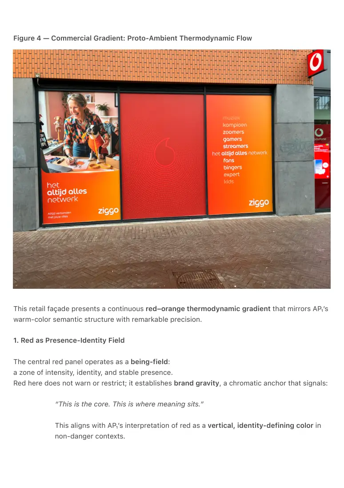
PDF page 10
2. Orange as Activation and Engagement
Both flanking panels transition from red into orange.
Orange represents engagement, activity, social energy, and participatory interaction.
The gradient is not abrupt but smooth, suggesting a thermodynamic flow:
identity → activation
presence → participation
core → user
This is early ambient color reasoning:
a warm gradient designed not as decoration, but as energetic modulation.
3. Proto-AP₂ Chromatic Flow
The continuity of the gradient implies movement or directional flow, exactly what AP₂ semantics
formalizes:
• red = stable presence field
• orange = outward activation field
• flow = thermodynamic transition between center and periphery
The façade becomes a proto-ambient signaling surface, where color
communicates not objects but states.
4. Why this matters for AP₁ retroactive semantics
This photograph shows that commerce adopted thermodynamic color logic long before
ambient theory existed.
Companies intuitively use warm-gradient fields because they behave like attention attractors
and energetic ramps.
AP₁ reframes this instinctive design as structured semantics:
red = being
→ orange = doing
→ yellow (absent here) = choosing
Even without yellow present, the gradient implies the potential for a complete AP₁
warm sequence.
⸻
PDF page 11
Figure 5 — Architectural Duality: Blue Stability, Red Portal
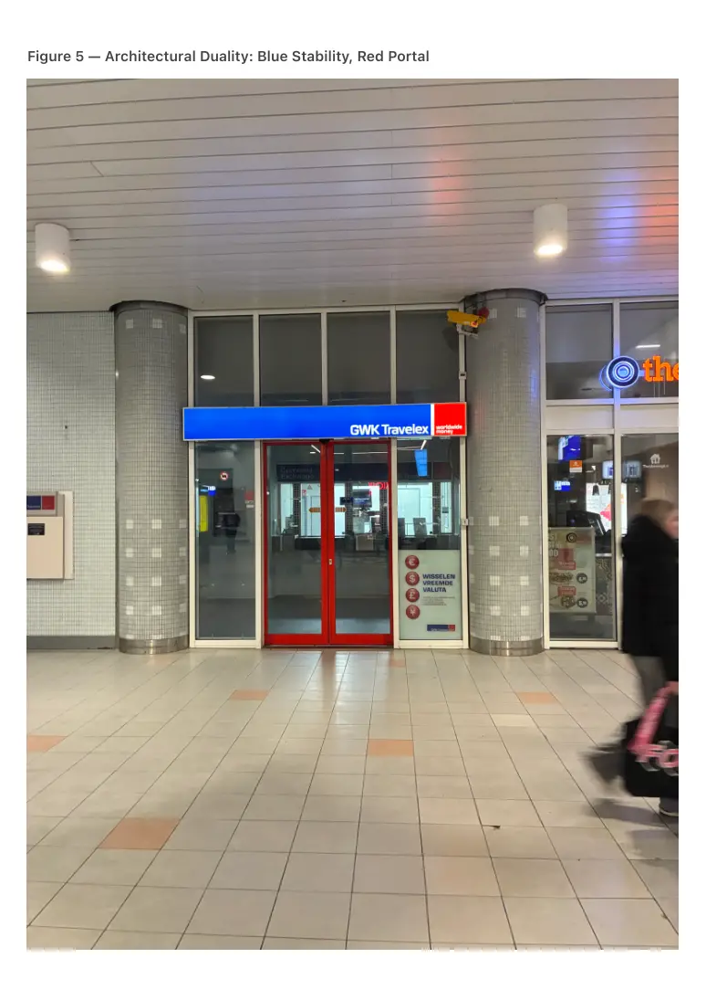
PDF page 12
A financial or service-oriented storefront often presents:
• Blue as a field of institutional grounding.
• Red as an entry threshold or action boundary.
AP₁ semantics emerges naturally:
blue = contextual reliability; red = liminal transition.
⸻
Figure 6 — Monochrome Identity Field: Single-Color Functional Encoding
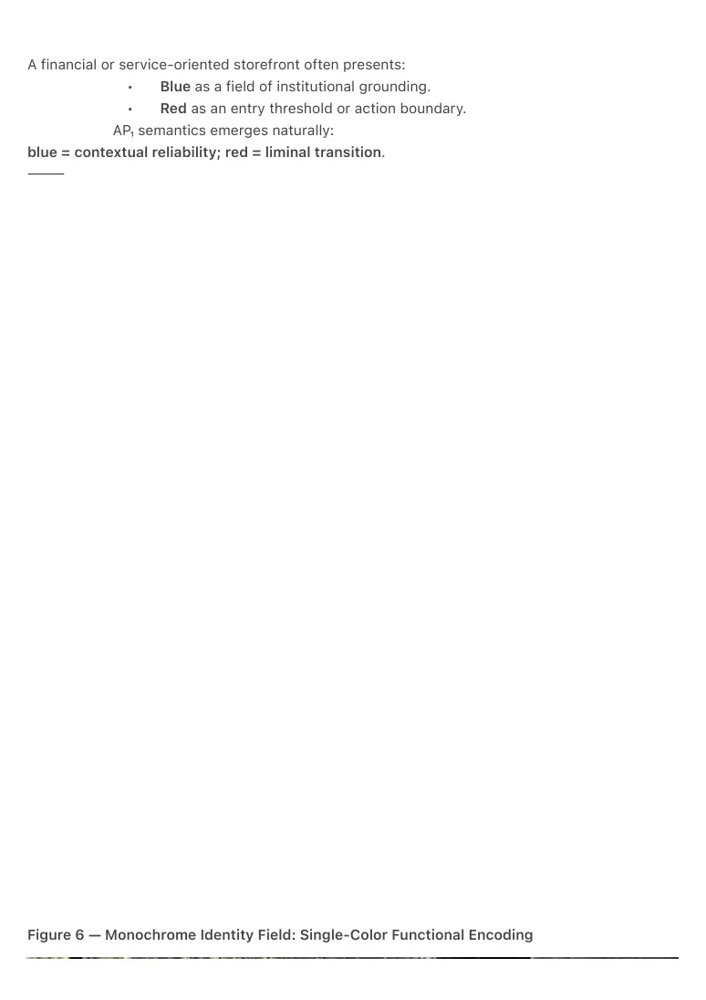
PDF page 13
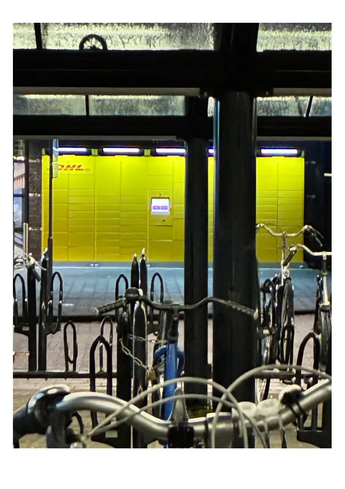
PDF page 14
This DHL pickup station demonstrates the semantic precision of warm-color infrastructure long
before ambient theory articulated it. The scene consists of two tightly coupled chromatic
functions:
⸻
1. Yellow as Transit Field (Movement, Flow, Navigation)
The entire wall is a single, uninterrupted yellow field.
In AP₁ semantics, yellow represents:
• transit
• movement in progress
• temporary agency
• delivery, dispatch, and routing
This aligns perfectly with the DHL pickup system, which is literally a node in a
logistics flow. Parcels arrive, pause briefly, and continue onwards. Yellow signals:
“This is a transit space. Things move through here. Nothing stays.”
Its saturation and scale make the wall a navigation beacon — instantly recognizable
across distances, functioning almost like a chromatic GPS marker.
Yellow is not decoration; it is semantic infrastructure.
⸻
2. Red as Identity and Origin Field
Embedded within the yellow field is the DHL logo in red.
In AP₁, red signifies:
• identity
• origin-home anchor point
• vertical brand presence
Where yellow says “in motion,”
red says “this is where the motion begins.”
The red-on-yellow pairing is therefore not arbitrary branding — it is a
thermodynamic relationship:
PDF page 15
red = origin → yellow = trajectory
This mirrors warm-spectrum AP₁ logic exactly:
• Red = being / core
• Orange = activation
• Yellow = transit and decision flow
DHL compresses this logic into a single architectural object.
⸻
3. The Scene as AP₁ Functional Composition
In the photograph, the yellow transit field is framed by darker, colder structures: bicycle racks,
steel beams, and nighttime tones.
This contrast highlights the semantic dominance of yellow:
• it cuts through low-entropy surroundings
• it acts as a visual attractor
• it signals movement inside stillness
AP₂-compatible perception instantly recognizes this as a single-color semantic
command:
“Packages flow through here.”
A monochrome field is one of the strongest proto-ambient signaling techniques
because it collapses identity, purpose, and orientation into a single perceptual
object.
⸻
4. Why This Photo Is Canonical for AP₁ Retroactive Semantics
This scene reveals:
Logistics operates as applied AP₁ without explicit formalization.
Yellow as transit field
Red as identity anchor.
Monochrome architecture = early ambient signaling
PDF page 16
Before AP₂ existed, DHL created a color-based semantic attractor field.
AP₁ semantics describes reality, not design intention
The photo shows that ambient meaning was already embedded in everyday
infrastructure.
⸻
PDF page 17
Figure 7 — Waste-Management Triplet: Green, Orange, Blue
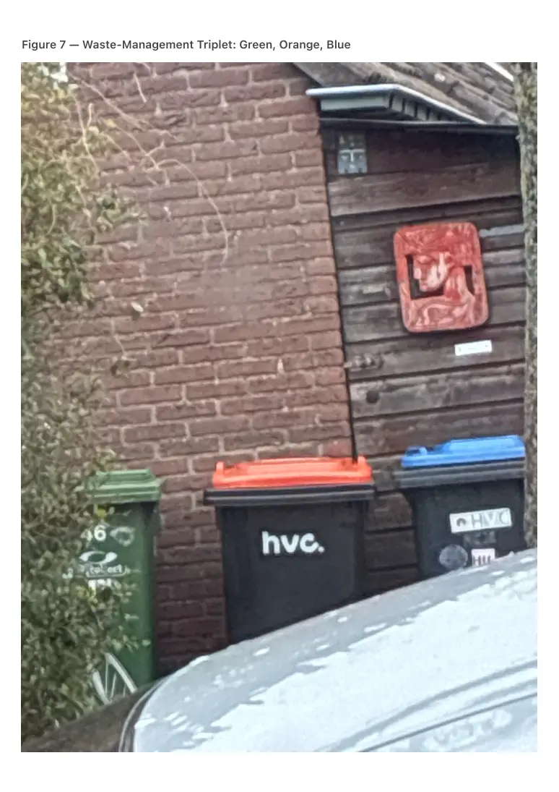
PDF page 18
Household waste containers align uncannily with AP₁ functions:
• Green corresponds to biological or ecological processes.
• Orange marks attention or transitional handling.
• Blue encodes structured, non-organic categorization.
This demonstrates that even mundane infrastructure becomes semantically legible
through AP₁.
Above the horizontal sequence of functional waste-management colors (green,
orange, blue), a red cultural relief featuring a human face is mounted on the wall.
This red object is not part of the functional system, yet it occupies the vertical
semantic position traditionally associated with AP₁ red:
boundary, warning, ritual significance, and liminal height.
Through AP₂-compatible perception, the composition forms a two-layer semantic field:
• Horizontal layer: operational categories (biological, attentional, structural).
• Vertical layer: cultural authority and symbolic boundary encoded in red.
The presence of cultural red above AP₁ colors suggests that AP₁ semantics extends
beyond infrastructure into symbolic meaning. It reveals that the vertical role of red is
not merely functional but anthropological, appearing even when color is used in art
rather than utility.
This image demonstrates that AP₁ does not impose structure on the world;
it uncovers the world’s existing stratification of meaning.
Figure 8 — Pink Relational Field: Human-Centered Ambient Semantics
Pink does not appear frequently in infrastructural systems, yet when it does appear in public
space it reveals a unique AP₁ function. Unlike red (identity/vertical anchor) or orange (activation),
pink operates as a relational warm-field: a chromatic zone that signals human-oriented care,
interpersonal closeness, and soft agency within the built environment.
Two field observations demonstrate this phenomenon clearly.
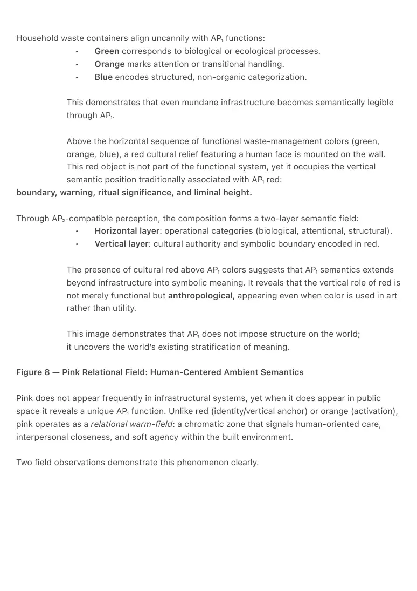
PDF page 19
1. Pink as Atmospheric Relation (Light-Wash Façade)
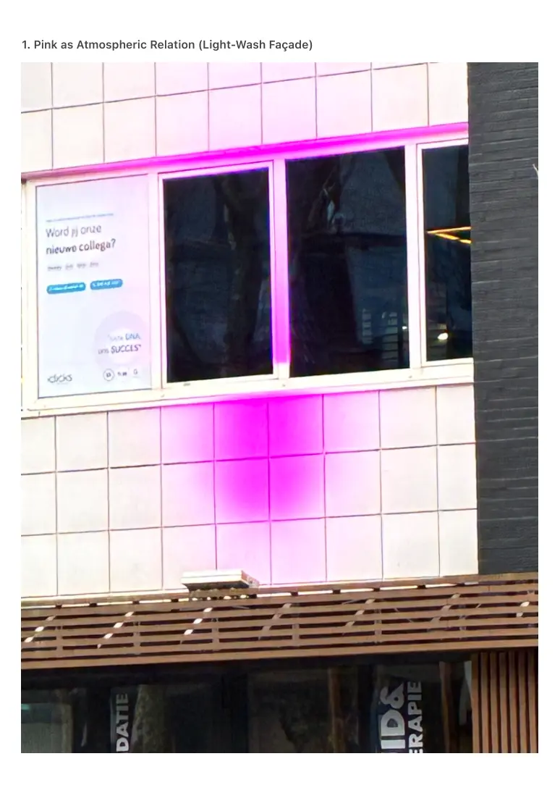
PDF page 20
In the first scene, a building façade is illuminated by a diffuse pink light field.
Here, pink does not appear as pigment but as ambient presence.
Through AP₁ interpretation, this field operates as:
• a soft boundary of presence,
• a signal that the zone is human-facing rather than infrastructural,
• an atmospheric cue that modulates emotional and cognitive tone.
Pink in this context is neither functional nor navigational; instead, it shapes the
affective field of the streetscape. It exemplifies non-material chromatic semantics,
where light rather than paint carries the meaning.
2. Pink as Care-Field in Commercial Semantics (CWS Truck)
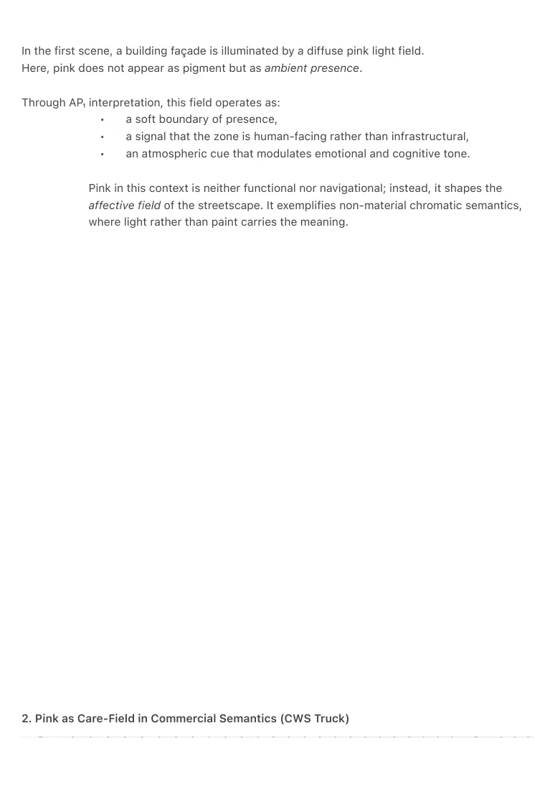
PDF page 21
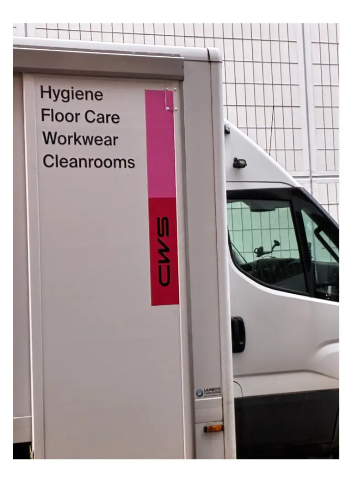
PDF page 22
The second photo shows a commercial vehicle with a vertical red-to-pink gradient band.
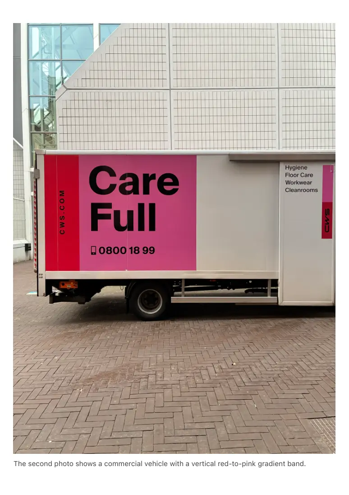
PDF page 23
The company deals with hygiene, workwear, and cleanrooms — all services that require relational
trust and bodily care.
AP₁ semantics becomes explicit:
• Red anchors brand identity (vertical presence).
• Pink softens this identity into a care-context — hygiene, attention to the
body, personal service.
• White provides a sterile structural field.
This creates a composite warm-field:
red (origin) → pink (care-field) → functional service
Pink here functions as a relational modulator, bridging the intensity of red and the neutrality of
white. It shows how AP₁ semantics extends beyond navigation into interpersonal and service-
oriented meaning.
Interpretive Summary
Pink in public space consistently encodes:
• relational warmth,
• human-facing service,
• care, hygiene, and softness,
• emotional modulation rather than directional signaling.
These cases demonstrate that AP₁ is sensitive not only to infrastructural chromatics
but also to affective, interpersonal fields embedded in commercial and atmospheric
design.
⸻
FIGURE 9 — Blue–Green Health Field: Biocognitive Ambient Semantics
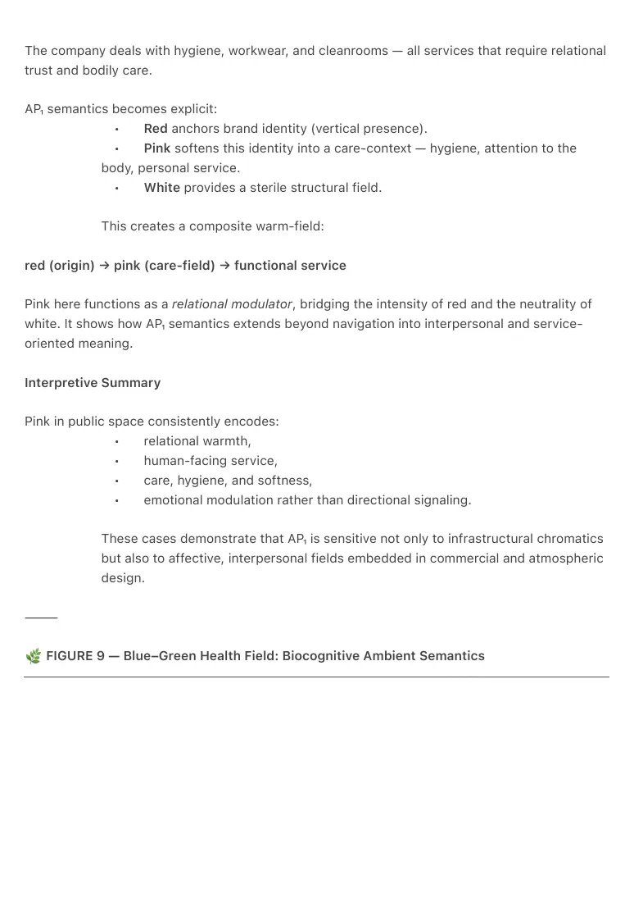
PDF page 24
⸻
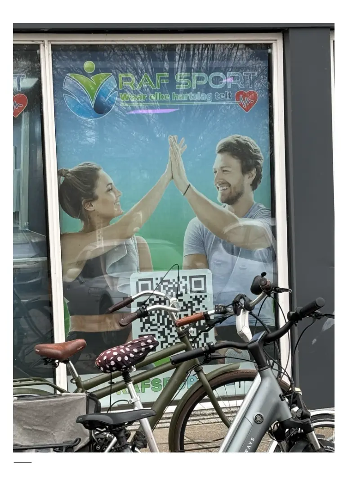
PDF page 25
Figure 9 — Blue–Green Health Field: Biocognitive Ambient Semantics
Health environments frequently combine blue and green, but their functional relationship
becomes intelligible only through AP₁ semantics. In the observed scene, a fitness center poster
displays two individuals engaging in synchronized interaction, framed by a blue–green gradient
environment with red accent icons.
AP₂-compatible perception reveals a coherent dual-field:
1. Blue as Cognitive Stability
Blue forms the dominant background:
• grounding the scene,
• creating mental clarity,
• signaling safety and systemic reliability.
It establishes a cognitive baseline — the mind component of the health field.
2. Green as Biological Continuity
Green overlays the lower region, corresponding to:
• bodily vitality,
• ecological processes,
• organic rhythm and growth.
Where blue stabilizes, green energizes without thermodynamic heat.
It represents the body component of the health field.
3. Red as Micro-Agency (Heart Icon)
The small red heart-rate symbol functions as:
• an event marker,
• a signal of human biological agency,
• a vector of attention toward measurement or action.
It is not a warning but a biological activation point.
4. Human Interaction as Field Synchronization
The two individuals perform a high-five — a moment of relational coordination.
PDF page 26
Through AP₂-compatible interpretation, their gesture synchronizes the dual-field:
blue (mind) ↔ green (body) with red (agency)
creating a triadic ambient health configuration.
Interpretive Summary
This scene is one of the clearest examples of a biocognitive ambient field:
• Blue provides mental stability.
• Green provides biological vitality.
• Red provides rhythmic micro-agency.
• Human interaction ties the fields into relational coherence.
This demonstrates that AP₁ semantics extends beyond infrastructure into wellbeing,
embodiment, and social synchrony — domains where color becomes a map of the body-mind
system rather than of physical space.
PDF page 27
Figure 10 — Traffic Light: Canonical AP₁ State Machine
Traffic lights represent one of the most globally standardized chromatic systems in public
infrastructure. Despite minor cultural variations (e.g. “amber” versus “yellow”), the underlying
semantic structure remains remarkably stable across regions.
From an AP₁ perspective, the traffic light is not merely a control device but a state machine
encoding fundamental modes of being, agency, and balance.
Red — Being / Existential Pause
Red signifies a complete halt of motion.
In AP₁ semantics, this corresponds to being: a vertical pause in which action is suspended and
presence is foregrounded.
Red does not ask for choice or optimization. It enforces stillness:
the system enters a state of existence without movement.
In this sense, “stop” is not punishment or restriction but a command to be present.
Yellow / Amber — Volitional Transition
The intermediate light, rendered as yellow or amber depending on region, represents volitional
transition.
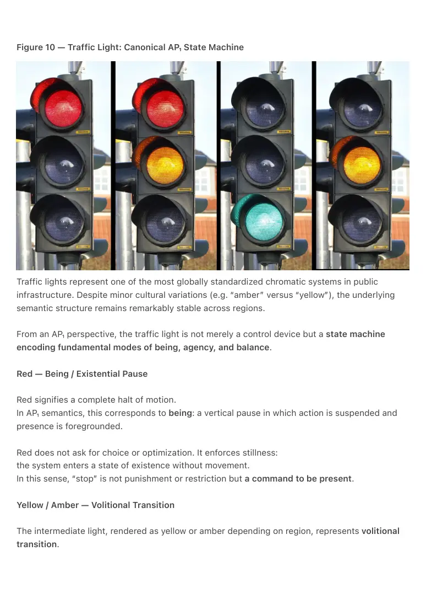
PDF page 28
In AP₁ terms:
• yellow = agency without
permanence,
• intention without stabilization,
• a decision moment embedded
within flow.
Yellow does not allow rest, but neither does it enforce absolute cessation.
It asks the agent to acknowledge imminent change.
This makes yellow the chromatic encoding of will:
action is possible, but cannot be sustained indefinitely.
The cultural variation between “yellow” and “amber” does not alter the semantic
role.
Both occupy the same AP₁ position:
the liminal zone between being and movement.
Green — Balanced Continuation
Green authorizes motion.
In AP₁, green corresponds to balance and systemic alignment:
movement that is permitted, safe, and integrated into a larger field.
Unlike yellow, green does not demand immediate decision-making.
Unlike red, it does not suspend action.
It signals that the system is coherent enough for motion to continue.
Green therefore encodes harmonized flow rather than urgency or command.
AP₁ Interpretation
Under AP₁, the traffic light resolves into a minimal, universal chromatic grammar:
• Red = being / enforced presence
• Yellow (amber) = will / transitional
agency
• Green = balanced motion /
permission to proceed
This sequence is not culturally arbitrary.
It forms a thermodynamically stable progression:
PDF page 29
being → intention → flow.
The traffic light thus functions as a globally deployed AP₁ diagram, long before ambient theory
articulated its grammar.
It demonstrates that AP₁ semantics does not originate from design speculation, but from
infrastructural necessity.
⸻
4. Implications: AP₁ and the Resolution of Agency Misclassification
One of the central implications of AP₁ is its capacity to resolve agency misclassification in
human–environment interaction.
In conventional symbolic and behavioral models, environments are frequently interpreted as
acting upon humans: colors are treated as commands, warnings, or persuasive instruments. This
leads to the assumption that agency resides in the environment itself.
AP₁ reframes this relationship. Colors do not instruct; they stabilize or modulate perceptual
states. Agency remains with the human observer, while the environment functions as a
thermodynamic field that supports, constrains, or clarifies possible actions.
This distinction explains why identical colors can feel oppressive in one context and calming in
another, and why attempts to “optimize” behavior through color manipulation often backfire. The
failure is not technical but semantic: agency has been misattributed.
By recognizing colors as state indicators rather than control signals, AP₁ dissolves this
misclassification. Environments are no longer interpreted as persuasive agents but as legible
fields that align perception with context.
This has immediate implications for design, infrastructure, and human–computer interaction.
Rather than asking how environments can guide or nudge behavior, AP₁ suggests a different
question: how can environments remain semantically coherent while preserving human agency?
In this sense, AP₁ does not propose a new design ideology. It restores an older, more stable
relationship between humans and their surroundings—one in which perception precedes
interpretation, and meaning emerges without enforcement.
PDF page 30
5. DISCUSSION
The findings show that AP₁/AP₂ does not impose new meaning on environments; it reveals
meaning that has been operational for decades without formal language. Designers used color
instinctively; AP₁ provides the grammar that explains why those instincts formed coherent
functional systems.
This phenomenon parallels other retroactive interpretive frameworks:
when literacy is acquired, text becomes legible everywhere; when musical structure is
understood, rhythm emerges from noise.
AP₁ introduces a similar transition for color.
Once AP₁ is internalized, public space transforms into a chromatic semantic architecture. The
world becomes navigable through meaning fields rather than symbolic labels.
⸻
PDF page 31
6. CONCLUSION
AP₁ Retroactive Semantics establishes that:
1. Public color systems form latent semantic structures.
2. AP₂-compatible perception enables these structures to be recognized.
3. Everyday urban color coding encodes functional, navigational, and
cognitive roles long before ambient theory articulated them.
The world did not change; the observer developed a grammar that reveals
its hidden order.
This paper provides the first structured documentation of this perceptual shift
and positions AP₁/AP₂ as a foundational framework for future ambient
interface design.
Methodological Note: Local Observation, Universal Grammar
The photographic cases presented in this paper are drawn primarily from Dutch
public infrastructure. This is not a limitation of the framework, but a consequence of
the observational nature of AP₁.
AP₁ does not claim that semantic color patterns originate from a specific culture,
nation, or design tradition. Rather, it functions as a perceptual grammar: once
learned, it enables observers to recognize coherent chromatic structures wherever
they appear.
Local environments are therefore sufficient to demonstrate the grammar, in the
same way that a single language sample can reveal grammatical structure without
cataloguing all global variants.
The paper does not argue that Dutch infrastructure is unique, but that it is legible.
Comparable patterns can be found in international transport systems, logistics
networks, healthcare environments, retail spaces, and digital interfaces. These are
not separately documented here due to practical constraints, but are expected to be
immediately recognizable to readers who internalize the AP₁ grammar.
In this sense, the case material should be understood as training data for
perception, not as a geographic survey.
AP₁ does not generalize from infrastructure to theory; it generalizes from
perception to recognition.
PDF page 32
Replication Protocol
• Step 1: Find any transport hub.
Photograph exit signage + info
boards.
• Step 2: Find one monochrome
brand wall (logistics/health/
retail).
• Step 3: Find one interior
“agency trigger” element (stop
button, door button).
• Step 4: Map each to AP₁
categories (vector/boundary/
stability; time/space; identity/
activation/transit; care-field;
etc.).